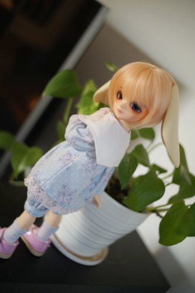
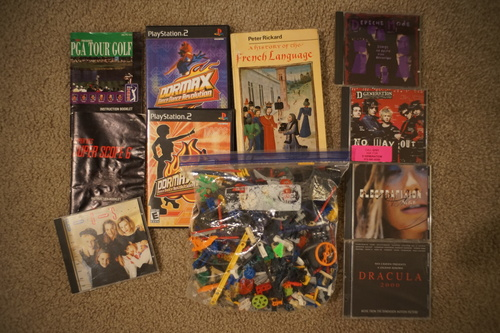

My desk has become very cramped. Please send help in these trying times.
Does the MySpace Dragon Hoard work for anyone?? I wish I could get it to load. I don't have all the pre-Skrillex Sonny Moore songs. How many are out there?! Hey what was that one song that was on that one band's webpage but wasn't on the band's iTunes so I couldn't buy it??? I really liked it but I didn't know how to computer back yet and didn't download it.
After a little vague searching, I think I found it but it's not as hard (or as good) as I remember ;_;
I got the magnets for the Leekeworld bunny ears I've had forever. I have no idea why they used such a small magnet for these because they are HEAVY. They constantly fall off his head! Maybe I'll try to find some bigger ones to attach to his headcap instead of the same ones.

I used hot glue to attach them. I didn't think it would work, but my coworker suggested it instead of super glue and I haven't had issues (in the past 24 hours). I also reglued all 4 of Verona's headcap magnets and both of Grassy's head magnets.
I'm not in love with him but he is looking a lot cuter lately! He's come a far from not even owning his own wig earlier this year. I need one single pompom to attach to the butt of his shorts!! Maybe I'll find one at my mom's house
Ryan's
Ryan's
Ryan's
Ryan's
Ryan's
Ryan's
Ryan's
My mom loves Dracula 2000 (due to Gerard Butler) so I was going to get this for her until I read the track list. I bought it for me. I wanted to hear SOAD's Metro but it wasn't as good as their Snowblind cover. COOKIES!!!
(Not shown) I can't remember if mentioned finding vol 1 because I didn't take a photo of it.
From the Believe tour. I'm very excited to wear this!
Ryan's
For Ryan's mom
Also for Ryan's mom
Ryan's
I was surprised to not see them in Shinedown's influences list
I didn't expect to end up with 3 98° CDs but sometimes these things just happen
Ryan's